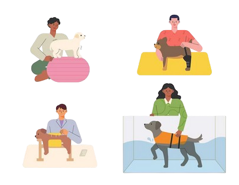
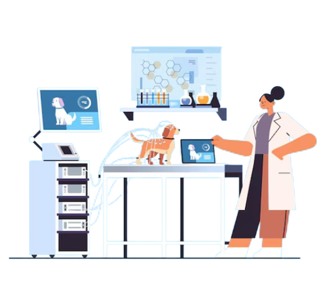

Asegura una vida larga y llena de alegría para tu mejor amigo.
Petlife es tu refugio de confianza para el cuidado integral de tu mascota. Con profesionales dedicados y servicios completos, ofrecemos una experiencia acogedora y personalizada, garantizando el bienestar, la salud y la felicidad de tus mascotas. Nos enorgullece ofrecer una atención de calidad que cubre todas las necesidades de tus compañeros peludos y de plumas.
Nuestra Clínica Veterinaria
En Petlife, contamos con las últimas tecnologías en diagnóstico y tratamiento médico para el cuidado de tu mascota. Nuestra clínica está diseñada para proporcionar un entorno seguro y cómodo, donde cada mascota se siente valorada y atendida.

Utilizamos equipos de última generación como ecografías, rayos X digitales y laboratorios especializados para análisis rápidos y precisos. Nuestro equipo está compuesto por veterinarios altamente capacitados y experimentados, listos para brindar atención integral a tu mascota. Realizamos desde consultas generales hasta intervenciones quirúrgicas complejas, siempre priorizando la salud y seguridad de tus animales.
Además, ofrecemos un ambiente amigable, donde podrás acompañar a tu mascota durante su visita. Creemos que un enfoque familiar ayuda a reducir el estrés y mejora la experiencia tanto para los dueños como para sus mascotas.
Farmacia Especializada
Encuentra los medicamentos que tu mascota necesita, desde vacunas hasta tratamientos personalizados. Nuestra farmacia está equipada con un amplio surtido de productos y medicinas de calidad, asegurando que tu mascota reciba el mejor tratamiento disponible.

Trabajamos con los mejores laboratorios veterinarios para ofrecer productos de calidad y eficacia comprobada. Además, tenemos un equipo dispuesto a asesorarte sobre el medicamento adecuado para tu mascota. Desde vitaminas hasta tratamientos para enfermedades crónicas, estamos aquí para ayudarte en cada paso del camino.
Nuestra farmacia no solo se centra en la venta de medicamentos, sino también en la educación de los propietarios sobre el uso adecuado de estos productos, asegurando que cada mascota reciba el tratamiento necesario para su bienestar.
Kinesiología y Rehabilitación
Nuestra clínica ofrece servicios avanzados de kinesiología y rehabilitación, ayudando a las mascotas a recuperarse de lesiones musculares o articulares. Entendemos que la recuperación es un proceso delicado y es fundamental abordarlo con cuidado y profesionalismo.
Contamos con equipos de fisioterapia especializados, como electroestimulación y ejercicios terapéuticos. Nuestros fisioterapeutas están altamente capacitados para diseñar un plan de recuperación adaptado a las necesidades de cada mascota. Trabajamos en conjunto con los dueños para garantizar que cada mascota reciba la atención necesaria en casa, complementando así el tratamiento en la clínica.
Ya sea que tu mascota haya sufrido una cirugía, una lesión o simplemente necesite ayuda para mantenerse activa en su vejez, estamos aquí para ayudar. Nuestro objetivo es asegurar que cada mascota tenga una recuperación completa y exitosa.
Tecnología Médica en Veterinaria
El uso de tecnología avanzada en medicina veterinaria es crucial para un diagnóstico preciso y rápido. En Petlife, utilizamos los últimos avances tecnológicos para asegurar que cada diagnóstico sea lo más exacto posible.
Contamos con equipos como tomografía computarizada, resonancia magnética y sistemas de monitoreo cardíaco en tiempo real. Estos equipos permiten realizar diagnósticos más acertados y proporcionar el mejor cuidado médico a tus mascotas. Nuestro enfoque proactivo en la detección temprana de problemas de salud garantiza que cada mascota reciba la atención que necesita antes de que se convierta en un problema mayor.
La combinación de tecnología avanzada y un equipo profesional altamente calificado nos permite ofrecer a nuestros pacientes la mejor atención veterinaria disponible.
Preguntas Frecuentes
Si tienes alguna duda sobre nuestros servicios o necesitas más información, visita nuestra sección de preguntas frecuentes o contáctanos directamente. Nuestro objetivo es ofrecerte toda la información necesaria para que tomes decisiones informadas sobre el cuidado de tu mascota.

¿Qué vacunas necesita mi mascota?
Las vacunas que necesita tu mascota dependen de su edad, especie y estado de salud. Generalmente, las vacunas más comunes son la rabia, parvovirus y moquillo para perros, y la leucemia y rabia para gatos.
¿Qué debo hacer si mi mascota está enferma?
Si notas que tu mascota tiene síntomas inusuales, como letargo, falta de apetito o vómitos, te recomendamos que nos contactes de inmediato para una evaluación. No esperes a que los síntomas empeoren.
¿Cuándo debo llevar a mi mascota al veterinario?
Es recomendable llevar a tu mascota al veterinario al menos una vez al año para chequeos de rutina. También debes llevarla si notas algún comportamiento extraño o cambios en su salud.
Contacto
Si tienes preguntas adicionales, no dudes en ponerte en contacto con nosotros a través del siguiente formulario: